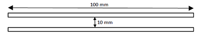
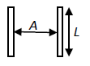

(1) Medien im Sinne dieser TRGS sind Gase, Flüssigkeiten oder Feststoffe, mit denen im Betrieb umgegangen wird.
Hinweis:
Zu den Medien gehören z. B. Abluft, Treibstoffe und Lösemittel sowie Stäube.
(2) Material ist die Bezeichnung für Werkstoffe, aus denen Gegenstände oder Einrichtungen bestehen.
Hinweis:
Zu den Materialien gehören z. B. Stahl, Glas, Kunststoffe, Holz, aber auch Beschichtungsmaterialien, z. B. Lacke, Folien, Gummierungen. Ausgenommen sind Verbundwerkstoffe.
(3) Gegenstände oder Einrichtungen sind aus Materialien gefertigt und stehen in der Regel mit Medien in Kontakt.
Hinweis:
Zu den Gegenständen oder Einrichtungen gehören z. B. Rohrleitungen, Schläuche, Behälter, Ladetanks, Pumpen.
(4) Durchgangswiderstand RD ist der elektrische Widerstand eines Materials oder eines Gegenstandes durch das Material oder den Gegenstand hindurch bestimmt unter Anwendung einer bestimmten Elektrodenanordnung. Der Durchgangswiderstand wird in Ω angegeben.
(5) Spezifischer Widerstand ρ ist der Durchgangswiderstand eines Mediums oder Materials bezogen auf die Einheitslänge und Einheitsquerschnittsfläche. Der spezifische Widerstand wird in Ωm angegeben.
Hinweis:
Der spezifische Widerstand wird oft auch spezifischer Durchgangswiderstand genannt.
(6) Oberflächenwiderstand RO ist der elektrische Widerstand gemessen auf der Oberfläche eines Gegenstandes. Er wird zwischen zwei parallelen Elektroden geringer Breite und jeweils 100 mm Länge, die 10 mm auseinander liegen und mit der zu messenden Oberfläche Kontakt haben, gemessen. Die Messspannung beträgt mindestens 100 V, abhängig vom Widerstandsbereich. Der Oberflächenwiderstand wird in Ω angegeben.

(7) Spezifischer Oberflächenwiderstand R ist der elektrische Widerstand gemessen auf der Oberfläche eines Gegenstandes. Die Messung erfolgt zwischen zwei parallelen Elektroden geringer Breite und der Länge L. Der Abstand A der Elektroden ist gleich ihrer Länge L (A = L). Der Messwert wird in Ω angegeben.

Hinweis:
In der angelsächsischen Literatur wird der spezifische Oberflächenwiderstand häufig mit Ω square oder Ω² bezeichnet. Der spezifische Oberflächenwiderstand beträgt das Zehnfache des Oberflächenwiderstandes.
(8)Streifenwiderstand RST ist der elektrische Widerstand an Streifen aus textilen Flächengebilden, die zur Verbesserung der Ableitfähigkeit von elektrostatischen Ladungen Beimischungen aus Materialien enthalten, deren Widerstand wesentlich geringer ist als der des textilen Grundmaterials, z.B. Carbonfasern oder metallisierte Fäden. Der Streifenwiderstand RST wird an Textilstreifen mit den Abmessungen 50 mm x 350 mm ermittelt.
(9) Ableitwiderstand RE eines Gegenstandes ist sein elektrischer Widerstand gegen Erdpotenzial, oft Erde genannt. Der Ableitwiderstand wird in Ω angegeben.
Hinweis: Die übliche Form der Messelektrode ist eine 20 cm2 große, elastische Kreisfläche. Die Kontaktierung mit der Oberfläche des zu messenden Gegenstandes erfolgt trocken. Der Ableitwiderstand hängt unter anderem vom spezifischen Widerstand, vom – gegebenenfalls spezifischen – Oberflächenwiderstand der Materialien sowie vom Abstand zwischen den gewählten Messpunkten und Erde ab. Dieser Widerstand wird häufig auch Erdableitwiderstand RE genannt.
(10) Leitfähigkeit K ist der Kehrwert des spezifischen Widerstandes. Die Leitfähigkeit wird in S/m angegeben.
(11) Leitfähig ist ein Medium oder Material mit einem spezifischen Widerstand ρ ≤ 104 Ωm. Leitfähig ist ein Medium oder Material auch, wenn sein Oberflächenwiderstand RO ≤ 104 Ω beträgt.
Hinweis 1:
Für Flüssigkeiten, Schüttgüter oder bestimmte Gegenstände werden in den entsprechenden Abschnitten hinsichtlich der Grenzwerte spezielle Festlegungen getroffen. Zur Veranschaulichung der Begriffe siehe auch Anhang I. Leitfähige Materialien können nicht gefährlich aufgeladen werden, wenn sie geerdet sind. Der Oberflächenwiderstand leitfähig gemachter Kunststoffe weist oft einen großen Streubereich auf. Der Höchstwert darf 105 Ω und der Mittelwert 104 Ω nicht überschreiten.
Hinweis 2: Als leitfähig werden auch Gegenstände und Einrichtungen bezeichnet, wenn sie aus leitfähigem Material bestehen.
(12) Leiter sind Gegenstände oder Einrichtungen aus leitfähigen Materialien.
(13) Ableitfähig ist
| a) | mit einem Oberflächenwiderstand zwischen 104 Ω und 109 Ω, gemessen bei 23 °C und 50 % relativer Luftfeuchte |
| oder | |
| b) | mit einem Oberflächenwiderstand zwischen 104 Ω und 1011 Ω, gemessen bei 23 °C und 30 % relativer Luftfeuchte. |
Hinweis 1:
Mit sinkender Luftfeuchte nimmt der Oberflächenwiderstand in der Regel beträchtlich zu.
Hinweis 2:
Ableitfähige Medien oder Gegenstände und Einrichtungen aus ableitfähigen Materialien speichern keine gefährliche elektrische Ladung, wenn sie mit Erde in Kontakt stehen. Als ableitfähig werden auch Gegenstände und Einrichtungen bezeichnet, wenn sie aus ableitfähigen Materialien bestehen.
Hinweis 3:
Für Flüssigkeiten, Schüttgüter oder bestimmte Gegenstände, wie z. B. ableitfähige Fußböden, werden in den entsprechenden Abschnitten hinsichtlich der Grenzwerte spezielle Festlegungen getroffen. Zur Veranschaulichung der Begriffe siehe auch Anhang I. Der umgangssprachliche Begriff „antistatisch“ wird an verschiedenen Stellen unterschiedlich verwendet und deshalb in dieser Technischen Regel nicht definiert.
(14) Isolierend sind Medien oder Materialien, die weder leitfähig noch ableitfähig sind.
Hinweis 1:
Als isolierend werden auch Gegenstände oder Einrichtungen aus isolierenden Materialien bezeichnet.
Hinweis 2:
Zur Veranschaulichung der Begriffe siehe auch Anhang I.
Hinweis 3:
Isolierende Medien sowie Gegenstände und Einrichtungen aus isolierenden Materialien werden unter Berücksichtigung ihrer elektrostatischen Eigenschaften auch als „aufladbar“ bezeichnet. Zu diesen Materialien gehören viele Polymere, z. B. Kunststoffe.
(15) Geerdet im elektrostatischen Sinne sind leitfähige Gegenstände, Flüssigkeiten und Schüttgüter mit einem Ableitwiderstand RE ≤ 106 Ω und Personen mit einem Ableitwiderstand RE ≤ 108 Ω. Personen und kleine Gegenstände sind auch geerdet, wenn ihre Relaxationszeit τ ≤ 10-2 s ist.
Hinweis:
Zur Erdung siehe auch Nummer 8.
(16) Aufladbar sind isolierende Medien sowie Gegenstände und Einrichtungen aus isolierenden Materialien. Aufladbar sind auch nicht mit Erde verbundene leitfähige oder ableitfähige Gegenstände und Einrichtungen.
(17) Leitfähiges Schuhwerk ist Schuhwerk mit einem Ableitwiderstand von weniger als 105 Ω.
(18) Ableitfähiges Schuhwerk ist Schuhwerk, welches ermöglicht, dass eine auf ableitfähigem Boden stehende Person einen Ableitwiderstand von höchstens 108 Ω aufweist.
(19) Explosionsfähiges Gemisch ist ein Gemisch aus brennbaren Gasen, Dämpfen, Nebeln oder aufgewirbelten Stäuben und Luft oder einem anderen Oxidationsmittel, das nach Wirksamwerden einer Zündquelle in einer sich selbsttätig fortpflanzenden Flammenausbreitung reagiert, so dass im Allgemeinen ein sprunghafter Temperatur- und Druckanstieg hervorgerufen wird.
(20) Gefährliches explosionsfähiges Gemisch ist ein explosionsfähiges Gemisch, das in solcher Menge auftritt, dass besondere Schutzmaßnahmen für die Aufrechterhaltung der Gesundheit und Sicherheit der Beschäftigten oder anderer Personen erforderlich werden.
(21) Gefährliche explosionsfähige Atmosphäre ist ein gefährliches explosionsfähiges Gemisch mit Luft als Oxidationsmittel unter atmosphärischen Bedingungen (Umgebungstemperatur von - 20 °C bis + 60 °C und Druck von 0,8 bar bis 1,1 bar).
(22) Explosionsgefährdeter Bereich ist der Gefahrenbereich, in dem gefährliche explosionsfähige Atmosphäre auftreten kann.
Hinweis:
Ein Bereich, in dem explosionsfähige Atmosphäre nicht in einer solchen Menge zu erwarten ist, dass besondere Schutzmaßnahmen erforderlich werden, gilt nicht als explosionsgefährdeter Bereich. Siehe auch § 2 Absatz 14 und Anhang I Nummer 1.7 der Gefahrstoffverordnung.
(23) Mindestzündenergie (MZE) ist die unter festgelegten Versuchsbedingungen ermittelte kleinste, in einem Kondensator gespeicherte elektrische Energie, die bei Entladung ausreicht, das zündwilligste Gemisch einer explosionsfähigen Atmosphäre zu entzünden.
Hinweis:
Die MZE wird in mJ angegeben.
(24) Mindestzündladung (MZQ) ist die unter festgelegten Versuchsbedingungen kleinste in einer elektrostatischen Entladung übertragene elektrische Ladungsmenge, die das zündwilligste Gemisch einer explosionsfähigen Atmosphäre entzünden kann.
(25) Explosionsgruppen I, II und III unterscheiden Gefahrstoffe, die zu Brand- und Explosionsgefahren führen können, mit dem Ziel, geeignete Geräte und Einrichtungen für den Einsatz in explosionsgefährdeten Bereichen auszuwählen.
(26) Die Explosionsgruppe I gilt für explosionsgefährdete Bereiche unter Tage, die Explosionsgruppe II für explosionsgefährdete Bereiche über Tage, die durch Flüssigkeiten und Gase entstehen. Gefahrstoffe werden in Explosionsgruppe II nach DIN EN 60079-0:2014-06 hinsichtlich ihrer Normspaltweite unterschieden.
(27) Die Explosionsgruppe III betrifft explosionsgefährdete Bereiche über Tage, die durch fein verteilte Feststoffe hervorgerufen werden. Die Gefahrstoffe der Explosionsgruppe III werden nach DIN EN 60079-0:2014-06 hinsichtlich ihrer Eigenschaften unterschieden.
(28) Stark ladungserzeugender Prozess ist ein Vorgang, bei dem im Vergleich zur Ladungsableitung hohe Ladungsmengen pro Zeit erzeugt werden und sich ansammeln können.
Hinweis:
Typische Vorgänge sind z. B. laufende Antriebsriemen, pneumatische Förderung von Schüttgut oder schnelle Mehrphasenströmung von Flüssigkeiten. Ausschließlich manuelle Vorgänge sind erfahrungsgemäß nicht stark ladungserzeugend.
(29) Gefährliche Aufladung ist eine elektrostatische Aufladung, die bei ihrer Entladung die zu erwartende explosionsfähige Atmosphäre entzünden kann.
Hinweis:
Die Entladungsformen Funkenentladung, Koronaentladung, Büschelentladung, Gleitstielbüschelentladung, gewitterblitzähnliche Entladung und Schüttkegelentladung werden im Anhang A3 erläutert.
(30) Relaxationszeit τ ist die Zeitspanne, in der eine elektrische Ladung, z. B. auf einer festen Oberfläche, im Innern einer Flüssigkeit, in einer Schüttung oder in einer Nebel- oder Staubwolke, auf 1/e (d. h. ungefähr 37 %) ihres ursprünglichen Wertes abnimmt.
Hinweis:
Die Relaxationszeit τ bei Entladung eines Kondensators der Kapazität C über einen Entladewiderstand R beträgt τ = R · C.
(31) Schüttgut umfasst Teilchen von feinem Staub über Grieß und Granulat bis hin zu Spänen.
Hinweis:
Zum Schüttgut zählt auch grobes Gut, das Feinstaubanteile enthält, z. B. Abrieb.